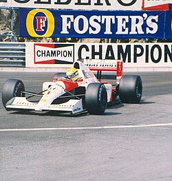

QUE ES ?

< El Campeonato Mundial de Fórmula 1 de la FIA, más conocido como Fórmula 1, F1 o Fórmula Uno, es la principal competición de automovilismo internacional y el campeonato de deportes de motor más popular y prestigioso del mundo.A cada carrera se le denomina Gran Premio y el torneo que las agrupa es el Campeonato Mundial de Fórmula 1. La mayoría de los circuitos de carreras donde se celebran los Grandes Premios son autódromos, aunque también se utilizan circuitos callejeros y anteriormente se utilizaron circuitos ruteros.
pagina principal